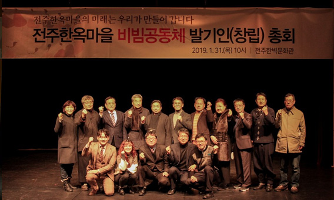

전주한옥마을소개
전주한옥마을은
전주 풍남동 일대에 700여 채의 한옥이
군락을 이루고 있는 국내 최대 규모의 전통 한옥촌이며,
전국 유일의 도심 한옥군입니다. 1910년 조성되기 시작한
우리나라 근대 주거문화 발달과정의 중요한 공간으로
경기전, 오목대, 향교 등 중요 문화재와 20여개의 문화시설이
산재되어 있으며, 한옥, 한식, 한지, 한소리, 한복, 한방 등
韓스타일이 집약된 대한민국 대표 여행지입니다.

한옥마을의 걸어온 길
1977년 교동과 풍남동일대 한옥보존지구로 지정
1987년 제4종 미관지구로 지정(2층 이하로 건축 제한)
1999년 전통문화특구 기본사업계획 수립(용역)
2002년 전주한옥보존지원조례 제정(한옥 개·보수비 지원 등)
2003년 지구단위계획 결정 고시 / 2009, 2011, 2013, 2017 일부변경
2005년 전통문화중심도시 전주 육성사업 기본구상 모델
2006년 대통령자문위원회에서 "지속가능한 마을"로 선정
2010년 "한국관광의 별" 선정, "국제슬로시티" 지정
2011년 "한국관광의 으뜸명소" 지정
2012년 지방브랜드 세계화사업 시범사업 선정
2013년 국토교통부 대통령업무보고 시 도시재생모범사례로 보고
2013년 지역희망박람회에서 창의적 성공모델로 소개
2014년 인문도시 선정(교육부)
2015년 한국문화체험의 관광콘텐츠화 대표사례소개(문화융성 방향과 추진, 문체부)
한옥마을을 지켜가는 사람들

비빔공동체 (2019. 1. 31. 구성)
한옥마을 비빔공동체는 주민, 상인, 자생단체의 소통과 상생을 바탕으로
한옥마을의 지속발전을 위해 만들어진 단체로,
다양한 주민참여사업을 주도적으로 발굴 추진하고 있습니다.
의결기능을 가진 이사회와 기획과 집행기능을 가지고 있는 운영위원회
산하에 획국, 홍보국, 조직국, 문화국, 동행국, 원주민국이 운영되고 있으며,
총 18명의 임원이 활동하고 있습니다.
이들은 다양한 주민주도의 콘텐츠 사업 및 주민화합 행사를 통해
한옥마을을 이끌어나가고 있습니다.